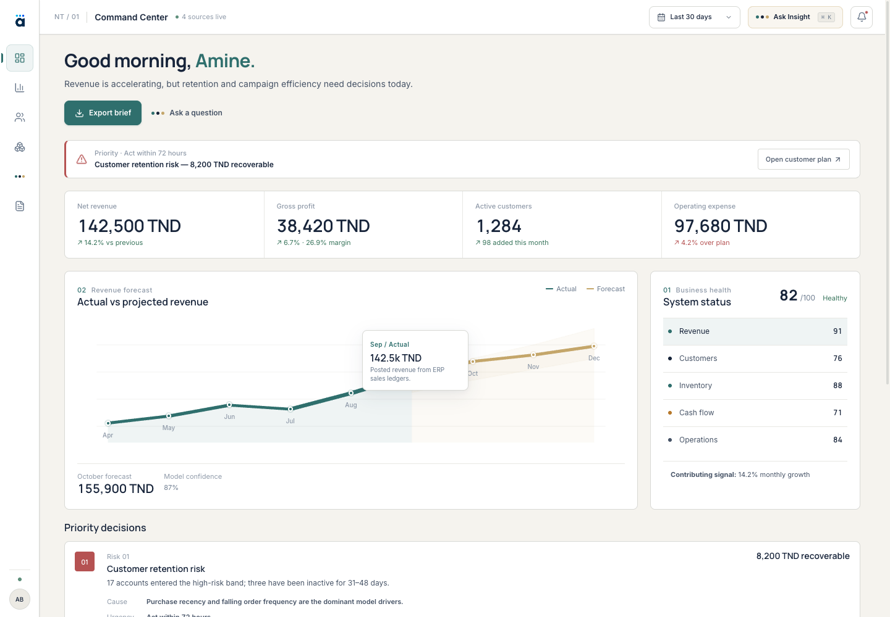
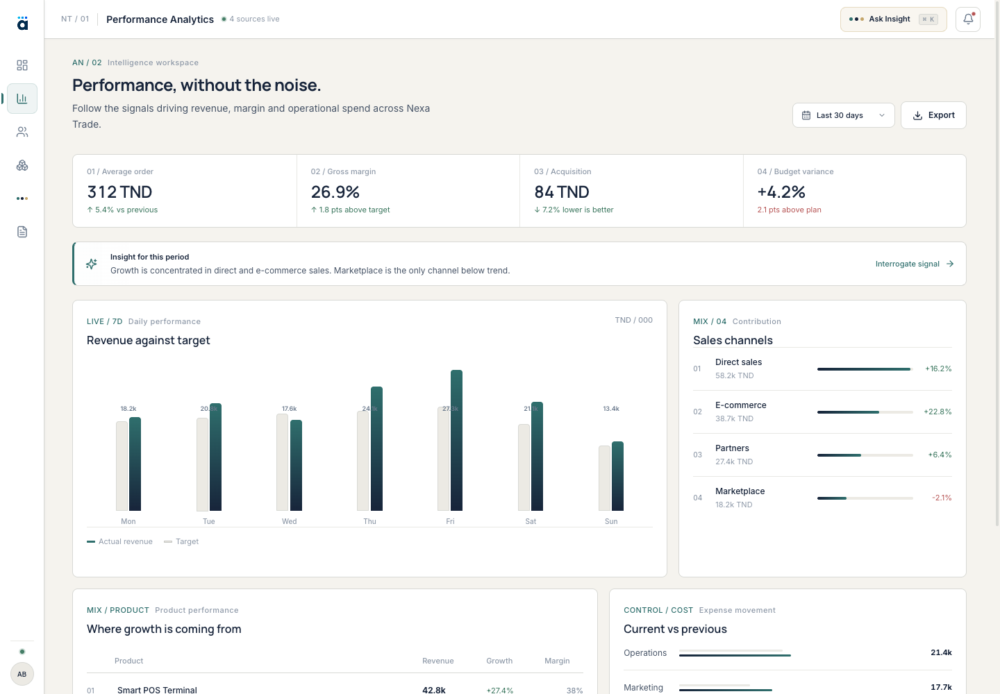
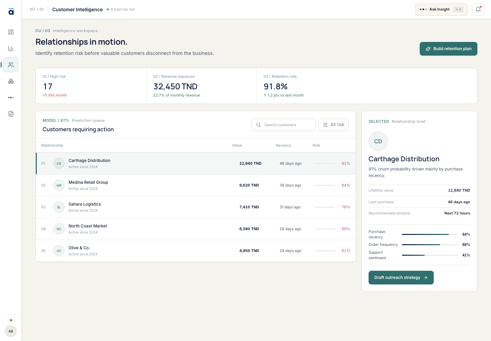
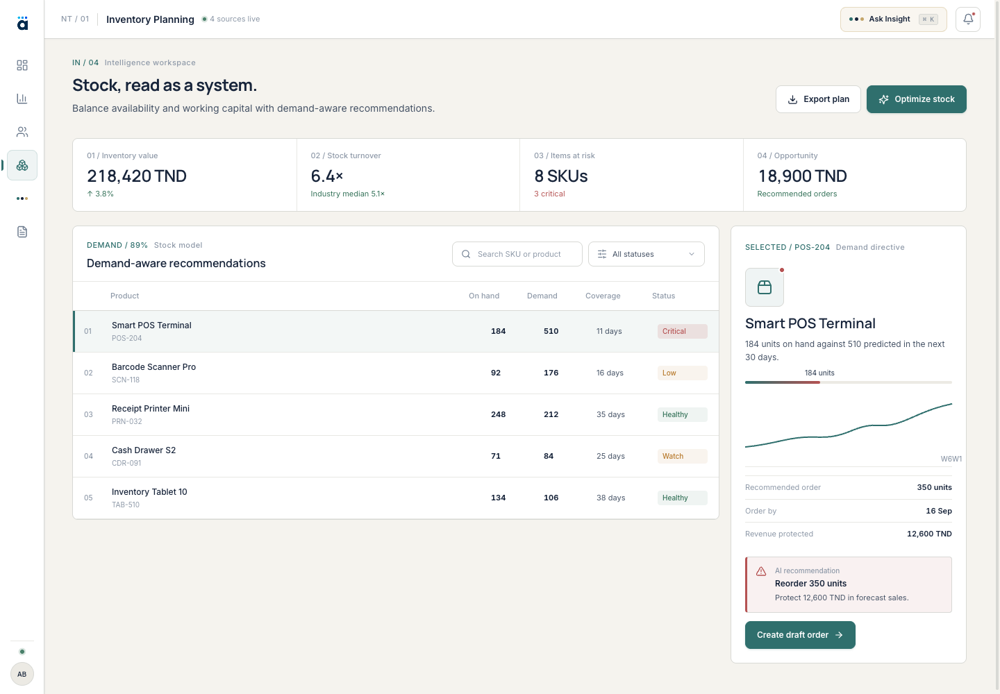
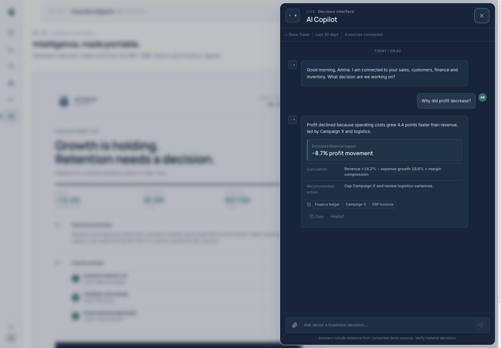
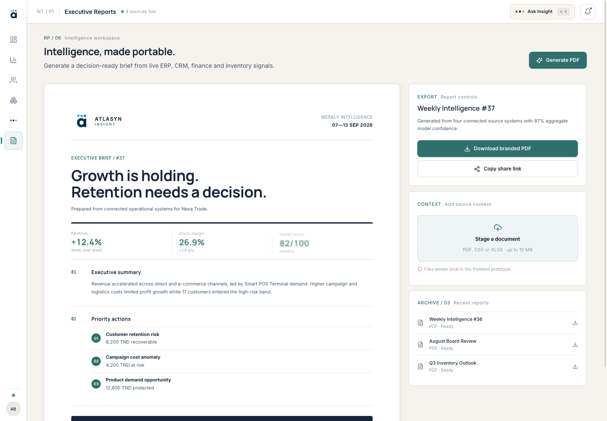
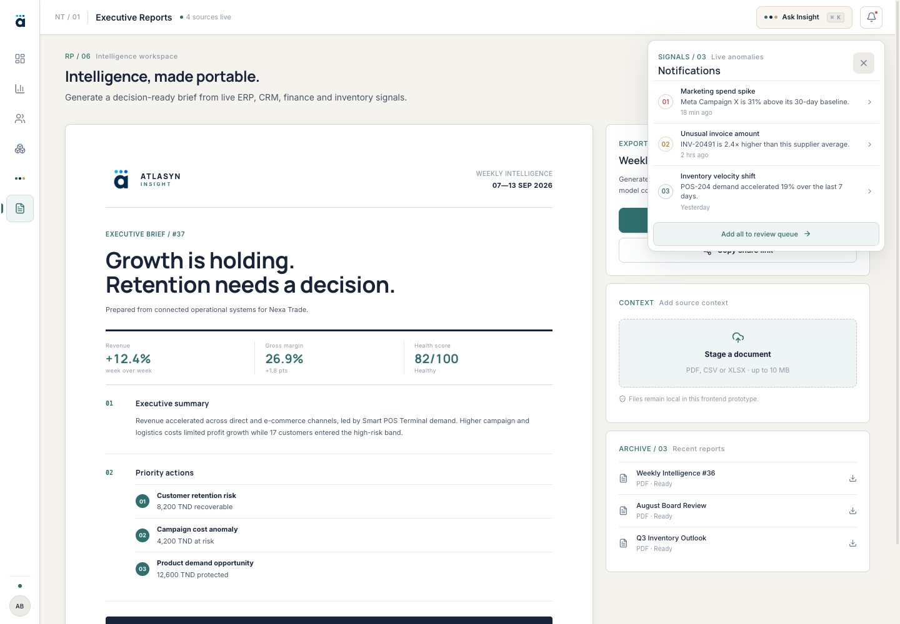
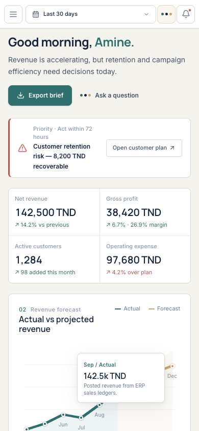
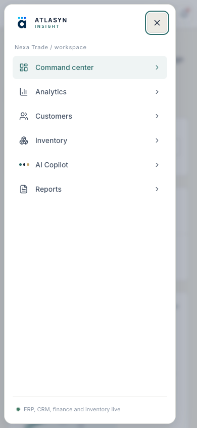
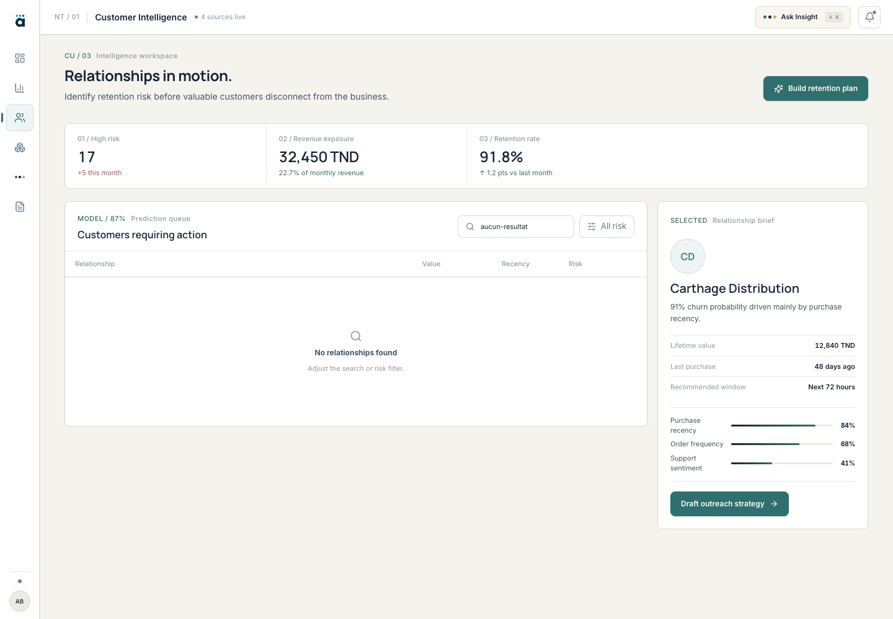

[DÉPARTEMENT / FILIÈRE]
Année universitaire [2025–2026]
Conception et développement d’ATLASYN Insight
Prototype SaaS d’intelligence décisionnelle pour le pilotage des entreprises tunisiennes
[MINISTÈRE OU UNIVERSITÉ, SI REQUIS]
[NOM DE L’ÉTABLISSEMENT]
[DÉPARTEMENT / FILIÈRE]
Rapport de stage
Conception d’une plateforme d’intelligence décisionnelle adaptée au contexte des entreprises tunisiennes
- Étudiant(e)
- [VOTRE NOM COMPLET]
- Matricule
- [VOTRE MATRICULE]
- Type de stage
- [STAGE D’ÉTÉ / PFE / INITIATION]
- Organisme d’accueil
- [NOM DE L’ORGANISME]
- Période
- [DATE DE DÉBUT — DATE DE FIN]
- Encadrant professionnel
- [NOM ET FONCTION]
- Encadrant académique
- [NOM ET GRADE]
Au terme de ce stage, je tiens à exprimer ma profonde reconnaissance à toutes les personnes qui ont contribué, directement ou indirectement, à la réalisation de ce travail.
Je remercie tout particulièrement Monsieur/Madame [NOM DE L’ENCADRANT PROFESSIONNEL], [FONCTION] au sein de [NOM DE L’ORGANISME D’ACCUEIL], pour son accueil, sa disponibilité et ses conseils. Son accompagnement m’a permis de mieux comprendre les enjeux liés à la conception d’une solution numérique destinée au pilotage des activités d’une entreprise.
J’adresse également mes sincères remerciements à Monsieur/Madame [NOM DE L’ENCADRANT ACADÉMIQUE], enseignant(e) à [NOM DE L’ÉTABLISSEMENT], pour son suivi, ses orientations méthodologiques et ses remarques constructives tout au long de cette expérience.
Je remercie l’ensemble des membres de [NOM DE L’ÉQUIPE OU DU SERVICE] pour leur disponibilité, la qualité de nos échanges et les connaissances professionnelles qu’ils ont partagées avec moi.
Enfin, je remercie ma famille, mes proches et toutes les personnes qui m’ont encouragé durant ma formation et pendant la préparation de ce rapport.
Remplacer tous les champs jaunes par les informations réelles et adapter ces remerciements aux personnes qui ont effectivement encadré le stage.
Dans un environnement économique où les entreprises produisent des volumes croissants de données commerciales et opérationnelles, la capacité à transformer rapidement ces informations en décisions compréhensibles constitue un enjeu important.
Le présent travail porte sur la conception et le développement d’ATLASYN Insight, un prototype front-end de plateforme SaaS d’intelligence décisionnelle adapté au contexte des entreprises tunisiennes. L’objectif consiste à réunir, dans une interface cohérente, les principaux indicateurs nécessaires au pilotage d’une activité : santé globale de l’entreprise, évolution et projection du chiffre d’affaires, risques associés aux clients, alertes de stock, notifications, rapports exécutifs et assistant décisionnel.
Le prototype a été réalisé avec React, TypeScript et Vite. Il propose un centre de commande exécutif, des espaces dédiés à l’analyse de la performance, des clients et des stocks, des filtres interactifs, un module de rapports PDF et une interface de Copilot. Une attention particulière a été accordée à la lisibilité, à l’adaptation aux différentes tailles d’écran, à l’accessibilité et à la représentation de données exprimées en dinars tunisiens.
Dans sa version actuelle, ATLASYN Insight utilise des données de démonstration réalistes mais fictives. La solution ne comporte pas encore de backend connecté aux systèmes d’une entreprise, de base persistante ni de modèle prédictif entraîné. Les prévisions, alertes et réponses du Copilot illustrent donc les usages envisagés et valident l’expérience utilisateur. Le résultat constitue une base fonctionnelle pour de futures intégrations de données, de services analytiques et de mécanismes d’intelligence artificielle gouvernés.
As companies generate increasing amounts of commercial and operational data, transforming this information into clear and timely decisions has become a significant challenge.
This work presents the design and development of ATLASYN Insight, a front-end prototype of a business-intelligence SaaS platform adapted to the needs of Tunisian companies. The project gathers the main indicators required for business monitoring within one coherent interface: overall business health, revenue trends and projections, customer risk, inventory alerts, notifications, executive reports, and a decision-support assistant.
The prototype was developed using React, TypeScript, and Vite. It includes an executive command center, dedicated performance, customer, and inventory workspaces, interactive filters, a reporting module, and a Copilot interface. Particular attention was given to readability, responsive behavior, accessibility, and the presentation of financial data in Tunisian dinars.
ATLASYN Insight currently relies on realistic but fictional demonstration data. It is not connected to a production backend, a persistent enterprise database, or trained and validated predictive models. The displayed forecasts, alerts, and Copilot responses illustrate intended product scenarios rather than production-grade artificial-intelligence results. The implemented prototype provides a functional foundation for future data integrations, analytical services, and governed AI capabilities.
Les numéros seront vérifiés après personnalisation finale, car l’ajout du contenu réel sur l’organisme d’accueil peut modifier la pagination.
Liste des figures
Liste des tableaux
Tableaux 1.1 Planning indicatif ; 2.1 Acteurs ; 2.2 Règles métier ; 3.1 Technologies ; 5.1 Scénarios de test ; 5.2 Bilan fonctionnel ; 5.3 Feuille de route.
Principales abréviations
- BI
- Business Intelligence — intelligence décisionnelle
- CRM
- Customer Relationship Management
- ERP
- Enterprise Resource Planning
- IA / AI
- Intelligence artificielle / Artificial Intelligence
- KPI
- Key Performance Indicator
- LLM
- Large Language Model
- RAG
- Retrieval-Augmented Generation
- SPA
- Single Page Application
- SKU
- Stock Keeping Unit
- TND
- Dinar tunisien
- UML
- Unified Modeling Language
- UX
- User Experience
Introduction générale
Cette introduction situe le projet dans le contexte de la transformation numérique des entreprises et précise la frontière entre le prototype d’expérience utilisateur réalisé et la future plateforme de production.
La transformation numérique ne consiste plus uniquement à dématérialiser des documents ou à remplacer certaines opérations manuelles. Elle concerne également la manière dont une organisation observe son activité, identifie ses difficultés et prend ses décisions. Les ventes, les interactions avec les clients, les mouvements de stock et les opérations financières génèrent quotidiennement des informations utiles. Cependant, la présence de données ne garantit pas leur exploitation efficace.
Dans de nombreuses petites et moyennes entreprises, les informations nécessaires au pilotage sont réparties entre plusieurs fichiers, applications et personnes. Le responsable commercial peut suivre les ventes dans un tableur, tandis que la situation des stocks est tenue dans un autre outil et que les informations relatives aux clients restent dispersées. Cette fragmentation ralentit la production des rapports, rend les comparaisons difficiles et augmente le risque d’erreur. Elle limite également la capacité des décideurs à détecter rapidement une baisse d’activité, un client important susceptible de partir ou un produit proche de la rupture.
Les solutions de Business Intelligence permettent de centraliser les données et de les présenter sous forme d’indicateurs, de graphiques et de rapports. Leur adoption peut toutefois être freinée par leur complexité, leur coût, leur caractère très générique ou la nécessité de disposer de compétences spécialisées. Une interface destinée à un dirigeant ne doit pas seulement afficher une grande quantité de données. Elle doit faire ressortir les informations prioritaires, expliquer leur signification et faciliter le passage de l’observation à l’action.
C’est dans ce contexte que s’inscrit ATLASYN Insight. L’idée consiste à concevoir une expérience d’intelligence décisionnelle adaptée à des entreprises tunisiennes, avec une attention particulière à la clarté, à la monnaie locale et à des scénarios proches de leurs activités. La plateforme envisagée regroupe un centre de commande exécutif, le suivi des revenus, une estimation de la santé de l’entreprise, l’identification des clients présentant un risque, la surveillance des stocks, la génération de rapports et un assistant conversationnel orienté vers l’aide à la décision.
Pour répondre à cette problématique, le travail réalisé poursuit plusieurs objectifs. Le premier est d’étudier les besoins associés au pilotage global d’une entreprise et de sélectionner les informations les plus importantes. Le deuxième consiste à organiser ces informations dans une architecture fonctionnelle cohérente. Le troisième objectif est de développer un prototype interactif permettant de tester les parcours essentiels : consultation des indicateurs, filtrage des clients et produits, ouverture des notifications, utilisation du Copilot et préparation de rapports. Enfin, l’expérience doit rester lisible sur ordinateur, tablette et téléphone.
Le projet a été mené sous la forme d’une démarche progressive. Une première phase a été consacrée au cadrage, à l’étude de l’existant et à la définition des utilisateurs cibles. Les besoins ont ensuite été structurés et hiérarchisés. Plusieurs choix d’interface ont été explorés avant de retenir une identité visuelle adaptée à un outil professionnel. Le développement a été effectué par modules, avec des vérifications régulières de la navigation, des interactions, du responsive design et de la qualité technique.
ATLASYN Insight est actuellement un prototype front-end utilisant des données fictives. Les connecteurs, le backend, la persistance, l’authentification et les modèles d’IA réels ne font pas partie de cette version. Le prototype valide l’organisation fonctionnelle, l’interface et les interactions nécessaires à une solution future.
Le rapport est organisé en cinq chapitres. Le premier présente le cadre du stage, l’étude de l’existant, la problématique et la démarche adoptée. Le deuxième définit les besoins fonctionnels et non fonctionnels. Le troisième expose la conception de la solution et ses choix d’architecture. Le quatrième décrit la réalisation technique. Enfin, le cinquième présente la validation, les difficultés rencontrées, le bilan et les perspectives d’évolution.
Cadre général du projet
Présentation de l’environnement du stage, analyse des pratiques existantes, définition du problème et positionnement d’ATLASYN Insight.
1. Cadre général du projet
1.1 Présentation de l’organisme d’accueil
Le stage a été réalisé au sein de [NOM DE L’ORGANISME D’ACCUEIL], une structure [FORME JURIDIQUE OU TYPE D’ORGANISATION] créée en [ANNÉE] et située à [VILLE, PAYS]. Elle exerce principalement dans le domaine de [SECTEUR D’ACTIVITÉ] et propose [PRINCIPAUX PRODUITS OU SERVICES] à une clientèle composée de [TYPE DE CLIENTS].
L’organisme s’appuie sur une équipe regroupant [PRÉSENTATION SYNTHÉTIQUE DES SERVICES OU DÉPARTEMENTS]. Son activité repose notamment sur [PROCESSUS OU COMPÉTENCES PRINCIPALES]. Dans le cadre de sa stratégie de développement, l’entreprise accorde une attention particulière à [TRANSFORMATION NUMÉRIQUE, DATA, INNOVATION OU AUTRE AXE RÉEL].
Le stage s’est déroulé au sein de [NOM DU SERVICE OU DE L’ÉQUIPE], sous la supervision de [NOM ET FONCTION DE L’ENCADRANT]. Cette équipe a pour mission de [MISSIONS RÉELLES DU SERVICE]. Son environnement a permis d’aborder le projet à la fois sous l’angle de la conception produit, de l’expérience utilisateur et du développement d’une application web.
Cette section ne reprend volontairement aucune information de l’entreprise figurant dans le rapport de référence. Ajouter ici l’historique, l’activité, l’organigramme et le logo de votre propre organisme, avec son autorisation.
1.2 Contexte et objectifs du stage
Le stage, réalisé du [DATE DE DÉBUT] au [DATE DE FIN], s’inscrit dans le cadre de [TYPE DE STAGE OU DIPLÔME] à [NOM DE L’ÉTABLISSEMENT]. La mission principale consistait à concevoir et développer le prototype d’une plateforme d’aide au pilotage destinée aux responsables d’entreprise.
L’idée initiale partait d’un constat simple : les décideurs ne manquent pas nécessairement d’informations, mais ils manquent souvent d’une vue unifiée et immédiatement exploitable. Un chiffre d’affaires global ne suffit pas à comprendre l’état d’une activité. Il doit être rapproché de son évolution, des comportements clients, des produits disponibles et des risques susceptibles d’affecter les prochaines périodes.
Le projet devait donc proposer une interface capable de présenter différents niveaux de lecture. Le premier fournit une synthèse exécutive. Le deuxième permet de comprendre les facteurs associés à un indicateur. Le troisième facilite l’accès à une action, comme examiner un client à risque, préparer une commande de réapprovisionnement ou produire un rapport.
Les objectifs opérationnels retenus étaient les suivants :
- analyser les besoins des profils utilisateurs visés ;
- définir une architecture fonctionnelle cohérente ;
- concevoir une identité visuelle professionnelle et lisible ;
- développer une application front-end responsive ;
- créer des interactions réalistes pour les principaux modules ;
- présenter des scénarios d’analyse à partir de données tunisiennes fictives ;
- préparer une base technique pouvant recevoir ultérieurement un backend et des services analytiques ;
- vérifier le fonctionnement du prototype sur plusieurs formats d’écran.
La mission ne comprenait pas le développement d’un système d’information complet. L’authentification réelle, la gestion des autorisations, la connexion aux logiciels métiers, la persistance des données et l’entraînement de modèles d’intelligence artificielle restent des travaux futurs.
1.3 Étude de l’existant
Avant de concevoir ATLASYN Insight, il était nécessaire d’examiner les méthodes habituellement utilisées pour suivre l’activité d’une entreprise. Dans un environnement peu centralisé, les responsables s’appuient fréquemment sur des tableurs, des exports issus de logiciels de caisse ou de gestion, des documents transmis par courrier électronique et des rapports préparés manuellement.
Le tableur constitue une solution souple et accessible. Il permet de réaliser rapidement des calculs, d’organiser des données et de produire des graphiques. Lorsque plusieurs personnes manipulent différentes versions d’un même fichier, la mise à jour devient cependant difficile à contrôler. Les informations peuvent être dupliquées, les formules modifiées par erreur et les indicateurs calculés selon des règles différentes. La préparation d’un rapport périodique exige alors des opérations répétitives de collecte, de nettoyage et de consolidation.
Les logiciels spécialisés apportent une meilleure structuration, mais ils restent souvent organisés par domaine. Un outil de caisse enregistre les transactions, un CRM suit la relation commerciale et une solution de gestion de stock contrôle les quantités disponibles. Cette répartition répond aux besoins opérationnels de chaque service, sans fournir systématiquement une lecture transversale destinée à la direction.
Les plateformes généralistes de Business Intelligence proposent des fonctions puissantes de connexion, de transformation et de visualisation. Elles peuvent néanmoins nécessiter un travail important de configuration ainsi qu’une connaissance approfondie des données. Lorsqu’un tableau de bord est conçu comme une juxtaposition de nombreux graphiques, l’utilisateur peut également avoir du mal à identifier l’information exigeant une intervention immédiate.
1.3.1 Limites identifiées
L’étude fait apparaître quatre limites principales. La première concerne la fragmentation de l’information. Les revenus, les clients et les stocks sont consultés séparément alors qu’ils peuvent être liés. Une rupture de stock peut, par exemple, provoquer une baisse de vente et dégrader la relation avec certains clients.
La deuxième limite est liée au temps d’interprétation. Un indicateur signale qu’une situation évolue, mais n’explique pas toujours pourquoi ni quelle action pourrait être envisagée. La troisième concerne la hiérarchisation des priorités. Plusieurs alertes sont souvent présentées au même niveau, sans distinguer clairement leur urgence, leur impact potentiel ou la qualité de leurs données.
Enfin, la quatrième limite porte sur l’accessibilité de l’outil. Une solution utile au dirigeant doit rester compréhensible sans exiger une expertise avancée en analyse de données. Elle doit fonctionner sur les équipements réellement utilisés et présenter les montants dans un format adapté au contexte de l’entreprise.
1.4 Problématique détaillée
La conception d’ATLASYN Insight soulève plusieurs difficultés. La première consiste à rassembler des informations issues de domaines différents sans surcharger l’écran. Une interface trop simplifiée risque de masquer les éléments nécessaires à l’analyse, tandis qu’une interface trop dense devient difficile à consulter.
La deuxième difficulté concerne la confiance. Une recommandation ne doit pas être présentée comme une certitude lorsqu’elle repose sur des données limitées ou simulées. L’utilisateur doit pouvoir distinguer l’indicateur observé, son interprétation et l’action proposée. Cette exigence devient encore plus importante lorsqu’une fonction est présentée comme assistée par intelligence artificielle.
La troisième difficulté consiste à conserver une expérience cohérente sur plusieurs appareils. Sur un grand écran, il est possible d’afficher simultanément plusieurs dimensions de l’activité. Sur mobile, les informations doivent être réorganisées selon leur priorité sans supprimer les actions essentielles.
1.5 Solution proposée
ATLASYN Insight a été imaginé comme un espace décisionnel organisé autour de plusieurs modules complémentaires. Le Command Center constitue le point d’entrée. Il présente une synthèse de l’activité, des indicateurs principaux, une projection de revenus, un score global de santé et des décisions prioritaires.
L’espace Analytics approfondit l’évolution du chiffre d’affaires, les canaux de vente, les produits, la marge et les dépenses. Le module Customers regroupe les informations relatives aux clients et met en évidence les relations sensibles dans le jeu de démonstration. Le module Inventory offre une lecture synthétique du stock et présente des recommandations illustratives de réapprovisionnement.
Le Copilot constitue une interface conversationnelle d’aide à la décision. L’utilisateur pose une question puis consulte une réponse structurée comportant une explication, des sources simulées, un calcul et un impact estimé. Dans la version réalisée, les réponses sont sélectionnées localement selon des mots-clés et ne proviennent pas d’un modèle distant.
Enfin, l’espace Reports permet de prévisualiser et de télécharger un rapport exécutif. Il inclut également le parcours d’ajout d’un document de contexte. Le fichier est seulement préparé dans l’interface : aucun traitement ni transfert serveur n’est effectué.
1.6 Démarche méthodologique
Le projet a suivi une démarche itérative inspirée des pratiques agiles, sans prétendre reproduire l’ensemble du cadre Scrum. Ce choix est adapté à un prototype dont les besoins visuels et fonctionnels doivent être affinés progressivement.
La première étape a consisté à définir le problème, les profils utilisateurs et le périmètre. Les fonctions ont ensuite été classées selon leur importance pour un parcours exécutif. Une deuxième étape a porté sur l’architecture de l’information. Les contenus ont été répartis entre Command Center, Analytics, Customers, Inventory et Reports. Les relations entre ces espaces, le Copilot et les notifications ont également été définies.
La troisième étape concernait la conception de l’interface. Plusieurs pistes visuelles ont été évaluées. Une première exploration immersive et tridimensionnelle a démontré des possibilités techniques, mais présentait un risque de lecture trop futuriste pour un logiciel de gestion. La direction « Quiet Intelligence » a finalement privilégié des surfaces claires, une typographie lisible, des accents sobres et des animations courtes.
Le développement a progressé module par module. Après chaque intégration, les parcours principaux ont été vérifiés afin d’identifier les incohérences de navigation, les contrôles inactifs ou les problèmes de mise en page. Les vues ont finalement été adaptées aux formats desktop, tablette et mobile.
| Phase | S1 | S2 | S3 | S4 | S5 | S6 |
|---|---|---|---|---|---|---|
| Cadrage et audit | ● | |||||
| Spécification | ● | |||||
| UX et design system | ● | ● | ||||
| Dashboard et Analytics | ● | |||||
| Customers et Inventory | ● | |||||
| Copilot et Reports | ● | |||||
| Tests et documentation | ● |
Ce planning sur six semaines est une proposition cohérente avec le dépôt, mais il doit être remplacé par les dates et activités réellement consignées pendant le stage.
1.7 Conclusion
Ce chapitre a présenté le cadre du projet et les raisons ayant conduit à la conception d’ATLASYN Insight. L’étude de l’existant met en évidence les difficultés liées à la dispersion des informations, au temps nécessaire pour les interpréter et au manque de hiérarchisation des actions. La solution proposée répond à ces difficultés par un prototype front-end unifié, centré sur la lisibilité et l’aide à la décision.
Le périmètre a également été clarifié : la version actuelle valide l’expérience utilisateur et l’organisation fonctionnelle à partir de données fictives. Elle ne constitue pas encore une plateforme connectée à des données réelles ni un système d’intelligence artificielle déployé. Le chapitre suivant détaille les acteurs, besoins et contraintes qui ont guidé sa conception.
Analyse et spécification
Identification des acteurs, formalisation des parcours, exigences fonctionnelles et non fonctionnelles, règles métier et critères de confiance.
2. Analyse et spécification des besoins
La valeur d’une plateforme décisionnelle repose moins sur le volume d’informations affichées que sur sa capacité à transformer des signaux dispersés en décisions compréhensibles, hiérarchisées et réalisables.
2.1 Problématique fonctionnelle
Dans de nombreuses entreprises, les informations utiles à la direction sont réparties entre plusieurs applications : logiciel comptable, ERP, CRM, feuilles de calcul, outil de gestion de stock et rapports périodiques. Cette fragmentation entraîne plusieurs difficultés. Un responsable peut connaître l’évolution du chiffre d’affaires sans comprendre immédiatement son effet sur la marge. Une baisse de fréquence d’achat peut rester invisible jusqu’à la perte effective du client. Une accélération de la demande peut également provoquer une rupture de stock avant que le service des achats ne réagisse.
ATLASYN Insight cherche à produire une lecture transversale de ces signaux. Le tableau de bord ne présente donc pas uniquement des valeurs isolées. Il met en relation la progression du revenu avec les dépenses, un risque d’attrition avec la valeur du client et une projection de demande avec le stock disponible. Les anomalies les plus importantes sont synthétisées sous forme de décisions prioritaires comportant une preuve, une cause probable, une échéance et un impact financier estimé.
2.2 Identification des acteurs
Le prototype cible plusieurs profils métiers. Les rôles ne sont pas encore protégés par une authentification ou des droits distincts, mais leur identification prépare l’évolution vers une plateforme multi-utilisateur.
| Acteur | Responsabilité principale | Fonctions attendues |
|---|---|---|
| Décideur / dirigeant | Piloter la performance globale | Consulter la santé, examiner les priorités, interroger le Copilot et exporter une synthèse |
| Analyste finance | Comprendre les variations | Comparer revenu et objectif, analyser canaux, produits, marge et dépenses |
| Responsable commercial | Prévenir l’attrition | Rechercher les clients, filtrer les risques, consulter les facteurs et préparer une action |
| Responsable stock / achats | Maintenir la disponibilité | Filtrer les références, comparer stock et demande, préparer un réapprovisionnement |
| Responsable reporting | Diffuser une information cohérente | Générer le PDF, préparer un document et partager un lien |
| Administrateur futur | Sécuriser et superviser | Gérer utilisateurs, rôles, connecteurs, journaux et politiques de conservation |
| Systèmes externes futurs | Alimenter la plateforme | Fournir les données ERP, CRM, finance et inventaire |
2.3 Exigences fonctionnelles
2.3.1 Navigation et contexte
L’utilisateur doit pouvoir accéder aux espaces Command Center, Analytics, Customers, Inventory et Reports depuis une navigation persistante. Le Copilot constitue une fonction transversale disponible depuis toutes les pages. Sur grand écran, la navigation prend la forme d’un rail latéral compact. Sur écran étroit, elle devient un panneau mobile afin de préserver la surface utile.
Le changement de page doit replacer la vue en haut du contenu, fermer les panneaux devenus inutiles et signaler la vue active à la fois visuellement et aux technologies d’assistance. Le raccourci Ctrl+K ou Cmd+K ouvre rapidement le Copilot.
2.3.2 Centre de commande
Le Command Center doit fournir une vue synthétique de l’activité. Il comporte le revenu net, le bénéfice brut, le nombre de clients actifs, les dépenses opérationnelles et un score de santé fixé à 82/100 dans le jeu de démonstration. Ce score est décomposé en cinq domaines : revenu, clients, inventaire, trésorerie et opérations. Chaque domaine est sélectionnable afin d’afficher son principal facteur explicatif.
Le tableau de bord présente également une projection mensuelle du revenu. Les valeurs réelles et prévisionnelles doivent être clairement distinguées. Une zone de confiance accompagne la projection et chaque point peut être sélectionné au clavier ou à la souris. L’infobulle précise la période, le montant, le statut réel ou prévisionnel et la provenance supposée.
Trois décisions prioritaires complètent la synthèse : risque de fidélisation, anomalie de coût marketing et opportunité liée au terminal Smart POS. Chaque décision comporte une justification, une cause, une urgence, un impact financier et un accès à l’espace concerné.
2.3.3 Analyse de la performance
L’espace Analytics doit permettre d’étudier les facteurs de performance. Il présente le revenu quotidien comparé à l’objectif, la contribution des canaux de vente, la croissance et la marge par produit ainsi que l’évolution des principales familles de dépenses. Le sélecteur de période propose les trente derniers jours, le dernier trimestre et l’année en cours.
Dans l’état actuel, le choix de période modifie les indicateurs du centre de commande et le contexte transmis au Copilot. L’application future devra étendre ce filtrage à toutes les séries analytiques. L’utilisateur peut exporter une synthèse ou demander au Copilot d’expliquer un signal.
2.3.4 Intelligence client
L’espace Customers doit identifier les relations nécessitant une intervention. L’utilisateur peut rechercher un client par nom et activer un filtre limitant la liste aux risques supérieurs ou égaux à 75 %. La sélection d’une ligne met à jour une fiche détaillée sans rechargement.
Cette fiche affiche la valeur du client, la date relative du dernier achat, la probabilité d’attrition, la fenêtre recommandée et trois facteurs explicatifs : récence d’achat, fréquence des commandes et sentiment du support. Lorsqu’aucun résultat ne correspond, une vue vide explique comment modifier les critères. Le responsable peut ouvrir le Copilot pour préparer une stratégie de contact.
2.3.5 Intelligence d’inventaire
L’espace Inventory doit permettre une recherche par produit ou SKU. Trois filtres sont disponibles : toutes les références, références nécessitant une action et références saines. La sélection d’un produit affiche le stock disponible, la demande prévue à trente jours, le nombre de jours de couverture, la quantité recommandée et la date souhaitée de commande.
Le statut est toujours affiché en texte en complément de la couleur. Pour une référence nécessitant un achat, l’utilisateur peut créer un brouillon de commande. Dans le prototype, cette action produit seulement une confirmation visuelle et ne transmet aucune commande à un fournisseur.
2.3.6 Copilot décisionnel
Le Copilot doit être accessible depuis l’en-tête, la navigation, les pages métier et le raccourci clavier. Il se présente sous forme d’un panneau modal conservant l’historique tant que l’application n’est pas rechargée. L’utilisateur peut saisir une question ou choisir une suggestion.
Pendant l’analyse, un état d’attente indique les domaines consultés. Une réponse enrichie comporte un résumé, un impact financier estimé, le calcul utilisé, une recommandation et les sources supposées. Elle peut être copiée et évaluée comme utile.
La version développée ne génère pas ses réponses avec un LLM. Une fonction classe la question par mots-clés et sélectionne une réponse préparée. Le but est de valider l’expérience conversationnelle, pas de revendiquer une capacité prédictive réelle.
2.3.7 Notifications, rapports et documents
L’utilisateur doit pouvoir ouvrir une liste d’anomalies, sélectionner un signal pour le marquer à examiner ou ajouter tous les signaux à une file de revue simulée. Les opérations terminées sont confirmées par une notification temporaire, tandis que les erreurs de génération ou de copie donnent lieu à un message compréhensible.
L’espace Reports doit afficher un aperçu cohérent avec le PDF généré. Le rapport contient les indicateurs essentiels, un résumé exécutif, trois actions prioritaires et une perspective assistée. L’utilisateur peut sélectionner ou déposer un fichier PDF, CSV ou XLSX. Dans le prototype, seul le nom du fichier est conservé localement ; aucun contenu n’est lu ou transmis.
2.4 Cas d’utilisation principaux
UC-01 — Examiner la situation générale
Le décideur ouvre l’application et accède au Command Center. Le système affiche la période, les indicateurs, la projection et les décisions prioritaires. Le décideur sélectionne un domaine de santé ou un point du graphique pour obtenir un détail. Il peut ensuite ouvrir la page métier correspondante ou exporter le rapport. Le résultat attendu est une compréhension rapide des principaux écarts et un chemin clair vers l’action.
UC-02 — Traiter un risque client
Le responsable commercial ouvre Customers, recherche un compte ou applique le filtre de risque élevé, puis sélectionne le client concerné. Le système affiche son exposition financière, sa récence et les facteurs de risque. L’utilisateur ouvre ensuite le Copilot pour demander une stratégie de rétention. Dans une version connectée, cette stratégie pourrait être transmise au CRM après validation humaine.
UC-03 — Préparer un réapprovisionnement
Le responsable stock filtre les références nécessitant une action et sélectionne un produit. Le système compare la disponibilité à la demande prévue, présente une couverture et propose une quantité. L’utilisateur confirme la création d’un brouillon. Une évolution devra soumettre ce brouillon à un service d’achat sécurisé avec journalisation.
UC-04 — Interroger le Copilot
L’utilisateur ouvre le Copilot, formule une question et valide son envoi. La question est ajoutée à la conversation, puis un état d’analyse apparaît. Le routeur local identifie le domaine et retourne une réponse structurée. L’utilisateur peut copier la réponse, donner son avis ou poser une nouvelle question.
UC-05 — Générer le rapport exécutif
Le responsable clique sur « Generate PDF ». Le module de rapport charge la bibliothèque PDF à la demande, récupère le logo, construit le document puis renvoie ses octets. Le navigateur crée une URL temporaire, déclenche le téléchargement et libère la ressource. En cas d’échec, un message informe l’utilisateur.
2.5 Règles métier
| ID | Règle | Justification |
|---|---|---|
| RG-01 | Un client est « à risque élevé » si son score est ≥ 75 %. | Seuil appliqué par le filtre du prototype |
| RG-02 | Une référence « Needs action » possède un statut différent de Healthy. | Regroupement Critical, Low et Watch |
| RG-03 | Une commande est proposée uniquement si reorder > 0. | Évite une action inutile sur un stock sain |
| RG-04 | Une question vide ou envoyée pendant l’analyse est refusée. | Préserve la cohérence conversationnelle |
| RG-05 | Le PDF contient logo, indicateurs, résumé et trois priorités. | Garantit une synthèse minimale |
| RG-06 | Un fichier déposé est seulement préparé localement. | Respecte la limite technique réelle |
| RG-07 | Toute couleur de statut est accompagnée d’un texte ou d’une valeur. | Lisibilité et accessibilité |
| RG-08 | Les scores et confiances restent qualifiés de démonstration. | Ne pas confondre prototype et modèle validé |
2.6 Exigences non fonctionnelles
2.6.1 Performance
Le premier affichage ne doit pas charger inutilement les modules coûteux. PDF-Lib est importé seulement au moment de l’export. Les animations de révélation reposent sur IntersectionObserver et les éléments ne sont plus observés après leur apparition. Les visualisations actives utilisent SVG et CSS, adaptés aux volumes réduits du prototype.
2.6.2 Ergonomie, cohérence et contexte local
L’interface doit présenter une hiérarchie stable entre contexte, mesure, interprétation et action. Un système de variables CSS centralise couleurs, espacements, rayons, ombres, durées et tailles. Les montants sont exprimés en TND et les exemples utilisent des entreprises et produits plausibles dans un contexte tunisien, sans prétendre représenter des organisations réelles.
2.6.3 Accessibilité
Le contenu doit rester utilisable au clavier. Les commandes possèdent des intitulés accessibles, les pages utilisent des repères sémantiques et un lien d’évitement conduit au contenu principal. Les panneaux modaux piègent le focus, se ferment avec Échap et rendent le focus au contrôle précédent. Les messages dynamiques utilisent role="status" ou aria-live. Le mode prefers-reduced-motion réduit les animations et un mode de contraste renforcé adapte les variables de bordure.
2.6.4 Responsivité
Le système doit fonctionner sur ordinateur, tablette et téléphone. Sous 1180 pixels, le rail latéral est remplacé par la navigation mobile. Les grilles se réorganisent, les panneaux se déplacent sous les listes et les actions conservent une taille adaptée au tactile. L’objectif est d’éviter tout défilement horizontal bloquant à 390 pixels.
2.6.5 Maintenabilité, fiabilité et sécurité
Le code doit être typé, organisé autour de composants réutilisables et compilable sans erreur TypeScript. Les données de démonstration, styles, génération de rapport et exploration 3D sont séparés. Les erreurs de génération, copie et stockage doivent être interceptées.
Le prototype ne doit pas prétendre assurer une sécurité serveur inexistante. Une version de production devra ajouter authentification, autorisation par rôle, isolation des organisations, chiffrement, validation côté serveur, journalisation, sauvegardes, contrôle des documents et politiques de confidentialité.
2.7 Conclusion
Cette analyse transforme une demande générale de tableau de bord intelligent en fonctions vérifiables. Elle montre également que la confiance dépend autant de la transparence des limites que de la richesse visuelle. La conception technique présentée au chapitre suivant traduit ces besoins en une architecture front-end modulaire tout en préparant l’intégration future de services métier réels.
Conception technique
Structure de l’application React, circulation des données, modèle d’interaction, génération documentaire, accessibilité et frontière de sécurité.
3. Conception technique
3.1 Choix d’architecture
ATLASYN Insight est développé sous la forme d’une Single Page Application avec React 18, TypeScript et Vite. React assure la composition de l’interface et la gestion des états interactifs. TypeScript formalise les structures manipulées et limite les erreurs liées aux propriétés absentes ou aux états incompatibles. Vite fournit le serveur de développement et la construction optimisée destinée au déploiement.
Le point d’entrée main.tsx monte le composant principal dans le DOM avec React.StrictMode. Le composant App joue le rôle de coordinateur : il conserve la page active, la période, l’ouverture du Copilot, de la navigation mobile et des notifications, le message temporaire et l’état de la séquence d’introduction.
Cette architecture est volontairement légère pour le prototype. Elle ne contient ni routeur, ni gestionnaire global d’état, ni couche réseau. Les transitions de page utilisent une union TypeScript Page et un état local. Ce choix accélère la validation de l’expérience, mais ne permet pas encore les URL profondes, l’historique de navigation ou le partage d’une vue métier précise.
3.2 Technologies retenues
| Élément | Technologie | Rôle |
|---|---|---|
| Interface | React 18 / ReactDOM | Composition des vues et gestion des interactions |
| Typage | TypeScript 5.6 strict | Sécurisation des structures et contrats de composants |
| Construction | Vite 6 | Développement local et bundle de production |
| Style | CSS personnalisé et variables | Design system, responsive et animations |
| Icônes | Lucide React | Pictogrammes homogènes |
| Visualisations actives | SVG et CSS | Courbes, barres, progressions et indicateurs |
| Documents | PDF-Lib | Création et téléchargement d’un rapport PDF |
| Session | Web Storage API | Introduction affichée une seule fois par session |
Le dépôt contient également Three.js, React Three Fiber, Drei, GSAP et Recharts. Ces bibliothèques ne participent pas toutes à l’interface active. Three.js et ses adaptateurs alimentent une exploration 3D isolée sous src/experience, tandis que GSAP et Recharts ne sont pas importés dans la version montée. Le statut de cette recherche est présenté séparément afin de ne pas confondre expérimentation et fonctionnalité livrée.
3.3 Organisation des composants
Le premier ensemble de composants correspond au cadre global : NavigationRail, MobileNavigation, TopHeader, NotificationPanel, Toast et BootSequence. Ils assurent la navigation, le contexte, les retours d’action et la première transition de session. La clé atlasyn-boot-seen, enregistrée dans sessionStorage, évite de répéter l’introduction pendant la même session.
Le deuxième ensemble regroupe les pages métier : OverviewDashboard, AnalyticsPage, CustomersPage, InventoryPage et ReportsPage. Elles reçoivent uniquement les actions nécessaires sous forme de propriétés. Le troisième ensemble contient des composants réutilisables tels que BrandLockup, DateControl, SectionLabel, WorkspaceHeading et StatStrip. Enfin, data.ts et report.ts isolent les données et le service documentaire.
3.4 Gestion de l’état et modèle de données
L’application suit un flux descendant. Les données statiques sont importées depuis data.ts. Chaque page applique ses transformations locales avant de rendre l’interface. Les interactions mettent à jour un état React, déclenchant le rendu des composants concernés.
Dans Customers, les états sont la recherche, le filtre de risque et le client sélectionné. La liste visible est obtenue en comparant le nom en minuscules et en appliquant le seuil de 75 %. Dans Inventory, la recherche porte sur la concaténation du produit et du SKU, puis se combine au statut. Les fiches latérales reçoivent directement l’objet sélectionné.
Le Command Center utilise useMemo pour calculer quatre indicateurs selon la période. Les coordonnées du graphique sont produites à partir des valeurs réelles ou prévisionnelles. Deux chemins SVG représentent les séries, tandis que des boutons HTML superposés rendent chaque point accessible au clavier.
| Entité | Attributs essentiels |
|---|---|
| RevenuePoint | Mois, valeur réelle, valeur prévisionnelle |
| WeeklyPerformance | Jour, revenu, objectif |
| Customer | Nom, initiales, valeur, dernier achat, risque |
| InventoryItem | Produit, SKU, stock, demande, couverture, réapprovisionnement, statut |
| ProductPerformance | Produit, revenu, croissance, marge |
| Anomaly | Titre, détail, date relative, sévérité |
| CopilotMessage | Rôle, contenu, domaine éventuel |
| BusinessSystem | Identifiant, libellé, score, facteurs |
3.5 Conception du Copilot
Le composant possède quatre états principaux : fermé, prêt, en analyse et réponse affichée. À l’ouverture, le focus est placé dans le panneau. Un gestionnaire intercepte Tab et Maj+Tab afin de conserver la navigation dans la boîte de dialogue. Échap ferme le panneau et le focus est restauré.
Lors de la soumission, le texte est nettoyé avec trim. Une question vide ou une nouvelle demande pendant l’état thinking est refusée. Le message utilisateur est ajouté à l’historique, puis une temporisation de 820 millisecondes simule le traitement. La fonction answerFor analyse la chaîne en minuscules : les termes liés au bénéfice sélectionnent la réponse financière, ceux liés au churn la réponse client et ceux liés au stock la réponse d’approvisionnement.
CopilotAnswer enrichit ensuite la réponse avec un impact, un calcul, une recommandation et plusieurs sources. Cette structure prépare une future intégration d’un modèle de langage en imposant un contrat de sortie plus contrôlable qu’un texte entièrement libre.
3.6 Génération du rapport PDF
La génération est isolée dans report.ts. La fonction buildExecutiveReportPdf importe dynamiquement PDF-Lib, crée un document de 612 × 792 points, intègre Helvetica et Helvetica Bold, puis charge le logo officiel. Elle dessine les surfaces, lignes, textes, indicateurs et actions avec une palette cohérente.
Les métadonnées du PDF — titre, auteur et sujet — sont définies avant la sérialisation. downloadExecutiveReport transforme les octets en Blob, crée une URL temporaire, déclenche un lien portant le nom atlasyn-weekly-intelligence.pdf et révoque ensuite l’URL. L’import dynamique évite de placer le moteur documentaire sur le chemin initial.
Le document actuel est une page fixe en anglais avec des valeurs inscrites dans le code. Une version de production devra générer ses sections depuis les filtres actifs, gérer plusieurs pages, la localisation, les ruptures de texte, l’horodatage serveur et une éventuelle classification de confidentialité.
3.7 Préparation des documents
La page Reports accepte les extensions PDF, CSV et XLSX par le sélecteur natif et par glisser-déposer. La fonction stage enregistre seulement le nom du fichier dans l’état React et déclenche une confirmation. Le Copilot possède une fonction similaire pour préparer une pièce jointe.
Cette conception valide l’ergonomie, mais ne constitue pas un traitement documentaire. Le navigateur ne vérifie pas réellement la taille maximale annoncée, n’analyse pas le contenu et ne transmet rien. L’architecture cible devra ajouter contrôle de type réel, limite de taille, analyse antivirus, stockage temporaire, extraction asynchrone, suivi d’état et suppression selon une politique de conservation.
3.8 Design system et responsive
Le fichier tokens.css centralise surfaces, textes, couleurs de marque, couleurs sémantiques, espacements, ombres, rayons, durées et dimensions globales. La direction « Quiet Intelligence » utilise un fond chaud #F5F3EE, des surfaces blanches, un bleu encre #17243A, un vert pétrole #2F6F6D et un accent sable #C4A66A. Le vert, l’ambre et le rouge restent réservés aux états sémantiques.
styles.css définit les seuils de 1180, 940, 720 et 410 pixels. Sous 1180 pixels, le rail disparaît. Sous 940 pixels, les grilles principales passent en colonne. Sous 720 pixels, les listes deviennent des rangées tactiles et le Copilot occupe l’écran. Les animations d’entrée reposent principalement sur CSS et sur un hook useReveal utilisant IntersectionObserver.
3.9 Accessibilité technique
L’accessibilité est traitée comme une contrainte d’architecture. Le lien d’évitement cible le contenu principal. La navigation expose la page active avec aria-current. Les boutons de menu et de notifications utilisent aria-expanded. Les valeurs essentielles des graphiques restent disponibles dans des boutons portant un nom explicite.
Le Copilot utilise role="dialog", aria-modal et un titre référencé. Ses messages se trouvent dans une région aria-live="polite". Les états d’attente et notifications utilisent des rôles de statut. Les champs de recherche et sélecteurs ont des labels accessibles. Les risques sont exprimés par une couleur, un pourcentage et un libellé.
Ces mesures constituent une base et non une certification WCAG. Des vérifications restent nécessaires avec lecteurs d’écran, outils automatiques, mesures de contraste, contrôle de l’ordre de lecture et localisation française/arabe avec prise en charge RTL.
3.10 Frontière de sécurité
La frontière de confiance actuelle se limite au navigateur. Aucune authentification, autorisation, base de données ou API n’est présente. Toutes les valeurs se trouvent dans le bundle JavaScript et peuvent être consultées ou modifiées localement. Les intitulés « sources connectées » et « données live » constituent une simulation visuelle.
React échappe les chaînes rendues et le projet n’emploie pas d’injection HTML directe, mais cette protection ne remplace pas une validation serveur. Le sélecteur accept ne garantit pas le type réel d’un fichier. Copier l’URL ne fournit ni partage sécurisé ni contrôle d’accès.
3.11 Architecture 3D expérimentale
Le dépôt conserve une exploration nommée « Living Business Universe » sous src/experience. Elle comprend un noyau de santé, un paysage de revenus, un réseau client, un monde d’inventaire et une couche de priorités réalisés avec Three.js, React Three Fiber et Drei. Le contrôleur prévoit un chemin de caméra, des transitions entre scènes, un ratio de pixels borné, la désactivation des ombres sur appareils compacts, la visibilité de l’onglet et la réduction de mouvement.
Cependant, App.tsx n’importe actuellement pas ExperienceCanvas. Cette expérience n’est donc ni chargée ni affichée dans la version active. Le choix final a privilégié une interface sobre, plus adaptée à un usage professionnel et plus légère sur les machines ordinaires. Le module 3D doit être considéré comme une étude technique optionnelle, à réévaluer uniquement après des tests d’utilité, de lisibilité et de performance.
3.12 Conclusion
La conception retenue fournit une base front-end claire et modulaire. Elle sépare les données de démonstration, les pages métier, le Copilot, le générateur PDF, le système visuel et la recherche 3D. Cette organisation facilite l’évolution vers une architecture connectée. Le principal enjeu suivant consiste à remplacer les simulations par des services sécurisés et auditables, tout en conservant la lisibilité et la transparence du prototype.
Réalisation d’ATLASYN Insight
Construction de l’interface, visualisation des indicateurs, intelligence client et stock, Copilot simulé, rapport PDF et adaptation responsive.
4. Réalisation de la solution
Le travail de réalisation transforme les besoins identifiés en un prototype fonctionnel où un responsable peut observer la situation, comprendre un signal, consulter ses preuves et engager une action simulée.
4.1 Environnement de développement
La version actuelle est une application monopage exécutée dans le navigateur. React 18 organise l’interface sous forme de composants, TypeScript 5.6 sécurise les contrats et Vite 6 fournit le serveur de développement ainsi que le bundle optimisé. La cible TypeScript est ES2020 et le mode strict est activé.
Le projet propose les commandes suivantes :
npm install # installer les dépendances npm run dev # démarrer le serveur de développement npm run typecheck # vérifier les types TypeScript npm run build # produire la version optimisée npm run preview # prévisualiser le bundle de production
La mise en forme est entièrement construite avec des variables CSS et des règles spécifiques. Ce choix apporte un contrôle précis sur la hiérarchie, les grilles responsives, les états de focus et les animations sans imposer l’apparence d’une bibliothèque de composants générique. Les pictogrammes proviennent de Lucide React. Les graphiques de la version active sont dessinés avec SVG et CSS, tandis que PDF-Lib génère le rapport dans le navigateur.
4.2 Système visuel et navigation
La direction retenue est appelée « Quiet Intelligence ». Son objectif est de créer un espace calme, professionnel et adapté à un usage quotidien. Le fond principal est un beige très clair, les surfaces sont blanches, le texte utilise un bleu encre, et les accents sont portés par un vert pétrole et un sable discret. Les teintes verte, ambre et rouge sont réservées aux états sémantiques.
Sur ordinateur, la navigation prend la forme d’un rail fixe de 64 pixels placé à gauche. Il permet d’accéder aux cinq vues et au Copilot. L’élément actif est signalé par la couleur, le fond et une marque latérale. Une infobulle textuelle apparaît au survol ou au focus. La barre supérieure affiche l’espace de travail, la page courante, l’état des sources simulées, la période, l’accès au Copilot et les notifications.
Sur écran plus étroit, le rail disparaît au profit d’un menu latéral. Ce menu possède un nom accessible, enferme le focus lorsqu’il est ouvert, se ferme avec Échap et restitue le focus au contrôle précédent. Les mêmes destinations restent donc disponibles sans encombrer l’affichage mobile.
4.3 Centre de commande exécutif
Le Command Center répond à trois questions : quelle est la situation actuelle, quel signal mérite une attention immédiate et quelle action faut-il engager ? Quatre indicateurs présentent le chiffre d’affaires net, le bénéfice brut, le nombre de clients actifs et les dépenses opérationnelles.
Le sélecteur de période propose les trente derniers jours, le dernier trimestre et l’année en cours. Un calcul mémorisé avec useMemo choisit le jeu de valeurs adapté. Par exemple, le chiffre d’affaires passe de 142 500 TND sur trente jours à 375 100 TND sur le trimestre et 1,12 million TND depuis le début de l’année. Dans une version connectée, la période deviendra un paramètre transmis au service analytique.
La courbe de revenus couvre avril à décembre. Les valeurs historiques vont jusqu’en septembre, tandis qu’octobre, novembre et décembre sont prévisionnels. Pour chaque point, l’abscisse est répartie régulièrement et l’ordonnée est normalisée dans l’espace du SVG. Deux chemins distincts représentent le réel et la projection, accompagnés d’une zone translucide matérialisant l’incertitude.
Chaque point est un véritable bouton HTML positionné au-dessus du SVG. Le survol, le focus ou le clic mettent à jour une infobulle contenant le mois, le statut réel ou prévisionnel, le montant et la provenance supposée. L’estimation d’octobre est de 155 900 TND avec une confiance de démonstration de 87 %.
Le score de santé est affiché à 82/100. Cinq systèmes peuvent être sélectionnés : Revenue, Customers, Inventory, Cash flow et Operations. Trois décisions prioritaires complètent la synthèse en suivant la structure « preuve → cause → urgence → impact → action ».

4.4 Espace Analytics
La page Analytics approfondit les signaux de performance. Une première bande regroupe le panier moyen, la marge brute, le coût d’acquisition et l’écart budgétaire. Une note contextuelle indique si l’évolution est favorable ou défavorable.
Le revenu quotidien est comparé à la cible sur sept jours. Le code recherche la valeur maximale parmi toutes les observations et cibles, puis convertit chaque montant en hauteur relative. Les deux séries sont distinguées par leur style et une légende. La contribution par canal présente la vente directe, le commerce électronique, les partenaires et la marketplace. Chaque ligne associe montant, longueur proportionnelle et taux de croissance.
Deux panneaux complémentaires détaillent la performance de cinq produits et la variation de cinq catégories de dépenses. La période sélectionnée est partagée avec le reste de l’application, mais les séries détaillées demeurent statiques dans le prototype. L’utilisateur peut exporter le rapport ou demander au Copilot d’expliquer un signal.

4.5 Intelligence client
La page Customer Intelligence transforme une liste de comptes en file d’actions de rétention. Chaque objet contient un nom, des initiales, une valeur, une date relative de dernier achat et un score de risque. Le jeu comprend Carthage Distribution, Medina Retail Group, Sahara Logistics, North Coast Market et Olive & Co.
Le filtrage combine deux conditions. Le nom, converti en minuscules, doit contenir le texte recherché. Si le filtre « High risk » est activé, le score doit également être supérieur ou égal à 75 %. Lorsqu’aucune relation ne correspond, un état vide explique comment rétablir des résultats.
La sélection d’une ligne alimente la fiche latérale : valeur vie client, récence, fenêtre recommandée de 72 heures et facteurs de risque. Les barres représentent l’influence relative de la récence d’achat, de la fréquence de commande et du sentiment du support. Le bouton final ouvre le Copilot afin de préparer une stratégie.

4.6 Intelligence d’inventaire
Le module Inventory Planning suit une logique comparable, adaptée aux produits. Chaque enregistrement comprend le produit, son SKU, le stock disponible, la demande estimée, les jours de couverture, la quantité recommandée et le statut opérationnel.
La recherche porte simultanément sur le nom et le SKU. Le filtre accepte toutes les lignes, uniquement celles nécessitant une action ou uniquement celles jugées saines. La sélection actualise le panneau de recommandation.
Le cas principal est le Smart POS Terminal : 184 unités disponibles, 510 unités de demande estimée sur trente jours, onze jours de couverture et une recommandation de 350 unités. Une jauge compare le stock à la demande et une courbe SVG suggère l’évolution sur six semaines. Le revenu présenté comme protégé atteint 12 600 TND.
Le bouton « Create draft order » ne transmet pas de commande. Il produit un message de confirmation, ce qui permet de tester le feedback sans introduire de conséquence externe pendant le prototypage.

4.7 Copilot décisionnel
Le Copilot s’ouvre dans un panneau modal à droite sur ordinateur et en plein écran sur mobile. Il est accessible depuis plusieurs pages ou avec Ctrl/Cmd+K. Tant que l’application n’est pas rechargée, l’historique reste présent même si le panneau est fermé, car le composant demeure monté.
La logique simule une analyse conversationnelle à partir de mots-clés. Après nettoyage, le programme classe les termes liés au bénéfice, au churn ou au stock. Un délai de 820 millisecondes produit un état d’analyse visible. La réponse présente un impact financier, un calcul, une recommandation et des sources de démonstration. L’utilisateur peut copier la réponse, signaler son utilité ou joindre localement un document comme contexte.
Dans l’exemple ci-dessous, la question sur le bénéfice renvoie une explication liant Campaign X et les coûts logistiques, un mouvement de −8,7 %, la formule utilisée et trois sources supposées. Cette interface valide le format d’une réponse explicable, mais elle ne mesure pas les performances d’un LLM puisqu’aucun modèle n’est exécuté.

4.8 Rapports et documents
La page Executive Reports affiche une prévisualisation du rapport hebdomadaire n° 37 pour la période du 7 au 13 septembre 2026. Elle reprend trois indicateurs, un résumé, les priorités et une projection d’octobre.
Au déclenchement de l’export, PDF-Lib est importé dynamiquement. Le programme crée une page, incorpore les polices Helvetica, charge le logo officiel, applique la palette ATLASYN puis dessine l’en-tête, les indicateurs, le résumé, les priorités et l’outlook. Les octets sont convertis en Blob, associés à une URL temporaire et téléchargés sous le nom atlasyn-weekly-intelligence.pdf.
Le module permet aussi de copier l’adresse courante et de choisir ou déposer un fichier PDF, CSV ou XLSX. Dans cette version, seul le nom est conservé. Aucun transfert, parsing, OCR ni stockage n’a lieu.

4.9 Notifications et retours d’action
Le panneau de notifications expose trois anomalies : hausse de dépense marketing, facture inhabituelle et changement de vélocité de stock. Le clic marque le signal pour révision dans l’interface, tandis qu’une action globale ajoute tous les éléments à une file simulée.
Un composant Toast uniformise les retours. Il sert pour la copie, le feedback du Copilot, la préparation d’une commande, le dépôt d’un fichier et l’export. Le message disparaît après 3,6 secondes et peut être fermé. Les erreurs liées au presse-papiers ou au PDF ne restent donc pas silencieuses.

4.10 Responsive et accessibilité
Quatre niveaux structurent l’adaptation. Sous 1180 pixels, le rail fixe disparaît. Sous 940 pixels, les grilles principales passent en colonne. Sous 720 pixels, les listes deviennent des rangées adaptées au tactile, le Copilot occupe tout l’écran et les actions de l’en-tête sont condensées. Un dernier ajustement sous 410 pixels empile les contrôles les plus étroits.
Un lien d’évitement mène au contenu principal. Les zones utilisent les éléments main, header, nav, aside et section. Les contrôles disposent de noms accessibles et d’attributs tels que aria-current, aria-expanded, aria-pressed, aria-modal et aria-live. Le Copilot et le menu mobile piègent le focus et gèrent Échap. Les focus visibles sont normalisés.
prefers-reduced-motion ramène la durée des animations à un minimum, tandis que prefers-contrast: more renforce les bordures et teintes secondaires. Ces mesures forment une base solide mais ne valent pas certification. Certaines listes utilisent des grilles de boutons plutôt que de vrais tableaux et plusieurs microtextes devront être revus lors d’un audit complet.


4.11 Performance et statut de la piste 3D
La version active privilégie SVG et CSS, les calculs locaux simples et les états React ciblés. L’observateur d’intersection cesse de suivre un élément dès sa première apparition. PDF-Lib est chargé seulement au moment de l’export. Les transitions reposent surtout sur opacity et transform.
L’exploration 3D conservée dans src/experience prévoit plusieurs optimisations : ratio de pixels limité, ombres supprimées sur appareils compacts, boucle de rendu à la demande quand l’onglet est masqué et raycasting actif seulement pour la scène dominante. Néanmoins, cette couche n’est pas importée par l’application active et ne pèse donc pas sur son chemin courant. Elle doit rester décrite comme une étude séparée.
4.12 Conclusion
La réalisation aboutit à un prototype cohérent couvrant le parcours « observer, comprendre, prioriser, interroger et partager ». Les modules emploient les mêmes données, le même langage visuel et les mêmes mécanismes de retour, donnant à ATLASYN Insight une identité plus forte qu’un assemblage de pages indépendantes.
Les choix React, TypeScript, SVG/CSS et PDF-Lib ont permis de construire une démonstration riche et responsive sans infrastructure serveur. Cette autonomie est utile pour la validation, mais définit aussi la limite principale : les sources, modèles et actions restent simulés.
Tests, difficultés et perspectives
Validation statique et fonctionnelle, comportement responsive, difficultés de conception, bilan du prototype et feuille de route vers une plateforme de production.
5. Tests, difficultés, bilan et perspectives
Une interface riche doit présenter des valeurs cohérentes, réagir correctement, rester lisible sur différents écrans et informer l’utilisateur lorsqu’une opération réussit ou échoue.
5.1 Stratégie de validation
La stratégie de qualité repose sur trois niveaux : contrôle statique TypeScript, génération du bundle de production et campagne de tests fonctionnels manuels dans le navigateur. Cette approche couvre les parcours critiques, mais ne remplace pas une suite automatisée de tests unitaires, d’intégration et de bout en bout.
npm run typecheck exécute le compilateur sur les configurations référencées et vérifie les types sans produire de JavaScript. npm run build enchaîne tsc -b et vite build, transforme les modules, élimine le code non référencé et crée les ressources de livraison.
Un build sans erreur valide la compatibilité technique de la base, mais pas la justesse métier. Une valeur incorrecte peut être parfaitement typée, et une interface peut compiler tout en étant incompréhensible. Des scénarios ont donc été rejoués à la souris, au clavier et avec différentes dimensions de viewport.
5.2 Tests fonctionnels manuels
| ID | Scénario | Résultat attendu | Statut |
|---|---|---|---|
| T01 | Introduction de session | Disparaît après ≈1,6 s et ne revient pas dans la session | Conforme |
| T02 | Navigation principale | Chaque vue s’ouvre, l’élément actif est signalé | Conforme |
| T03 | Changement de période | Trois jeux de KPI sont disponibles | Conforme |
| T04 | Courbe de revenus | Infobulle précise et distinction réel/prévision | Conforme |
| T05 | Santé métier | Le signal explicatif suit le système sélectionné | Conforme |
| T06 | Recherche et filtre clients | Liste filtrée et état vide si aucun résultat | Conforme |
| T07 | Sélection client | Fiche mise à jour avec valeur, récence et risque | Conforme |
| T08 | Recherche et statut inventaire | Les lignes correspondent aux critères | Conforme |
| T09 | Directive de stock | 350 unités pour Smart POS et toast adapté | Conforme |
| T10 | Copilot | Analyse, réponse dédiée, impact, calcul et sources | Conforme |
| T11 | Clavier dans les overlays | Focus enfermé, Échap ferme puis restaure | Conforme |
| T12 | Notifications | Trois anomalies et retours d’action | Conforme |
| T13 | Rapport PDF | Logo, titre, KPI et priorités téléchargeables | Conforme |
| T14 | Dépôt documentaire | Nom du fichier préparé localement | Conforme au prototype |
| T15 | Presse-papiers | Copie ou message si permission refusée | Conforme |
| T16 | Responsive | 1440, 1024, 768 et 390 px sans blocage | Conforme |
| T17 | Mouvement réduit | Animations neutralisées et contenu visible | Conforme |
Un smoke test automatisé par le protocole de débogage du navigateur a également vérifié la recherche sans résultat, le filtre Healthy de l’inventaire, l’ouverture du dialogue Copilot, la production d’une réponse contenant trois sources et l’affichage des trois notifications. Aucune exception JavaScript n’a été relevée pendant cette exécution.

5.3 Validation responsive et accessibilité
À 1440 pixels, le rail reste fixe et les panneaux sont affichés côte à côte. À 1024 pixels, le rail est remplacé par le menu mobile et les compositions commencent à se simplifier. À 768 pixels, les zones clients, inventaire et rapports passent en colonne. À 390 pixels, les listes changent de structure, les actions principales restent accessibles et le Copilot occupe la totalité de l’écran.
Les essais au clavier ont porté sur le lien d’évitement, les sélecteurs, les points du graphique, les listes interactives et les overlays. Le focus visible permet d’identifier le contrôle actif. La boucle du menu mobile et du Copilot évite qu’un utilisateur navigue accidentellement dans l’arrière-plan. Les annonces de statut rendent les retours perceptibles par une technologie d’assistance.
Ces vérifications restent exploratoires. Une recette complète devra utiliser plusieurs lecteurs d’écran, mesurer tous les contrastes, contrôler les cibles tactiles, analyser l’ordre de lecture et inclure des personnes concernées. Le prototype contient encore quelques microtextes et des listes tabulaires composées avec des grilles plutôt qu’avec l’élément table.
5.4 Vérifications de performance
La sobriété de la version active limite son coût. Les courbes sont tracées en SVG, les histogrammes reposent sur CSS et les données sont déjà en mémoire. L’ouverture d’une page ne déclenche ni requête métier ni traitement volumineux.
Le chargement différé de PDF-Lib évite d’intégrer le moteur documentaire au chemin initial. L’observateur de révélation cesse d’observer un élément après son affichage. Les opérations de filtrage portent sur cinq clients ou cinq produits et sont immédiates. Avec plusieurs milliers d’entrées, elles devront être paginées et exécutées côté serveur, ou virtualisées.
L’exploration 3D n’étant pas importée par l’application active, son moteur WebGL ne pénalise pas le chargement courant. Une future campagne devra établir des budgets mesurables : poids initial, Largest Contentful Paint, Interaction to Next Paint, mémoire, latence des requêtes et comportement sur un ordinateur professionnel d’entrée de gamme.
5.5 Difficultés rencontrées et solutions
5.5.1 Équilibre entre innovation et crédibilité
Une piste immersive et tridimensionnelle avait été développée pour représenter l’entreprise comme un univers vivant. Elle démontrait une ambition technique, mais son esthétique sombre et son coût graphique risquaient de rapprocher le produit d’une interface futuriste plutôt que d’un outil quotidien de gestion.
La solution a consisté à recentrer l’expérience sur « Quiet Intelligence » : palette claire et chaleureuse, surfaces mates, typographie lisible, mouvements courts et priorité donnée aux décisions. L’exploration 3D a été conservée dans un module séparé. Cette évolution illustre une leçon importante : l’innovation n’est utile que si elle renforce compréhension et confiance.
5.5.2 Densité d’information et hiérarchie
Le centre de commande devait réunir KPI, alerte, projection, santé et priorités. Une accumulation de cartes identiques aurait rendu les informations difficiles à hiérarchiser. La réalisation utilise plusieurs formes adaptées : bande d’indicateurs, ruban d’alerte, courbe, liste de systèmes et fiches décisionnelles.
Sur mobile, les tableaux multicolonnes devenaient illisibles. Les media queries transforment les lignes en compositions à deux niveaux, masquent seulement les colonnes secondaires et déplacent les détails dans la fiche sélectionnée. Cette adaptation conserve l’action essentielle au lieu de réduire mécaniquement toute l’interface.
5.5.3 Graphique accessible sans dépendance lourde
Un SVG offre une bonne qualité visuelle, mais ses points ne constituent pas naturellement des contrôles HTML. La solution combine un tracé SVG avec une couche de boutons positionnés selon les mêmes coordonnées. Les événements de souris, focus et clic convergent vers un état sélectionné. Cette approche réduit les dépendances et améliore l’accessibilité, au prix d’une synchronisation rigoureuse entre chemins et infobulle.
5.5.4 Overlays utilisables au clavier
Sans gestion dédiée, la touche Tab peut déplacer le focus sous un panneau. Le menu mobile et le Copilot enregistrent donc l’élément précédemment actif, focalisent leur première commande, interceptent Tab et Maj+Tab aux extrémités, gèrent Échap puis restaurent le focus. requestAnimationFrame laisse React terminer le rendu avant le placement du focus.
5.5.5 Document autonome dans le navigateur
PDF-Lib permet de créer un rapport sans serveur, mais impose de gérer le logo, les polices, le positionnement absolu et la durée de vie de l’URL de téléchargement. Une fonction dédiée construit le document, tandis qu’une seconde l’enveloppe dans un Blob, déclenche le lien temporaire et révoque l’URL. Les erreurs sont interceptées et traduites en message.
5.5.6 Simuler l’IA sans induire en erreur
Le prototype devait illustrer un Copilot sans infrastructure d’IA. Le risque était de présenter des réponses préparées comme le résultat d’un modèle réel. La solution technique est un routeur déterministe à mots-clés avec délai simulé. La solution éditoriale consiste à afficher sources, calcul et avertissement demandant de vérifier les décisions importantes. Cette simulation valide le parcours, mais ne mesure ni précision ni hallucination d’un modèle.
5.5.7 Dette issue des expérimentations
La coexistence de la version active et du dossier 3D crée une dette documentaire et technique. Le README décrit encore partiellement l’ancienne expérience et le manifeste contient des dépendances non utilisées. Il faudra soit retirer ces éléments, soit réintroduire l’expérience derrière un chargement réellement optionnel et une préférence utilisateur. Dans les deux cas, la documentation devra refléter exactement le livrable.
5.6 Bilan fonctionnel et technique
| Objectif | Niveau atteint | Observation |
|---|---|---|
| Vue exécutive unifiée | Atteint | KPI, santé, projection et priorités réunis |
| Analyse revenus/coûts | Atteint avec démo | Comparaisons, canaux, produits et dépenses |
| Risque client | Parcours validé | Scores et facteurs simulés, pas de modèle réel |
| Intelligence d’inventaire | Parcours validé | Recommandation sans connexion fournisseur |
| Copilot explicable | Prototype fonctionnel | Règles locales, sans LLM ni RAG |
| Rapport exécutif | Atteint côté client | PDF une page, non archivé |
| Traitement documentaire | Amorçage | Nom préparé, aucun traitement |
| Responsive et clavier | Base solide | Audit formel à compléter |
| Production SaaS | Hors périmètre | Backend, sécurité et exploitation à construire |
Sur le plan personnel, cette réalisation m’a permis de consolider la structuration d’une application React, le typage strict, la gestion des états et événements, les visualisations SVG, le responsive, l’accessibilité des dialogues, la génération de documents et la communication claire des limites d’un prototype. Elle m’a aussi appris qu’une interface décisionnelle s’évalue autant sur sa capacité à expliquer que sur son apparence.
5.7 Limites actuelles
- les données sont des constantes chargées depuis
data.ts; - les quatre sources affichées ne correspondent pas à des intégrations réelles ;
- les scores de santé, churn, confiance et demande sont prédéfinis ;
- le Copilot applique des règles locales et ne communique avec aucun LLM ;
- les conversations, sélections et actions ne sont pas persistées ;
- le dépôt documentaire ne transfère ni n’analyse le fichier ;
- le brouillon de commande n’est ni enregistré ni envoyé ;
- le PDF est fixe, limité à une page et généré côté client ;
- les pages ne disposent pas d’URL propres ;
- l’interface est en anglais, sans i18n ni mode RTL ;
- aucune authentification, isolation multi-tenant ou autorisation n’est implémentée ;
- il n’existe pas encore de suite automatisée, pipeline CI/CD ou observabilité ;
- le module 3D et plusieurs dépendances restent dormants.
Ces limites matérialisent la frontière entre une preuve de concept d’expérience utilisateur et un système d’information exploitable avec des données sensibles.
5.8 Architecture cible de production
5.8.1 Présentation et sécurité
Le frontend pourra être conservé, mais devra être découpé par domaines et complété par un routeur, des URL stables et une couche de requêtes. L’internationalisation couvrira français, arabe et anglais avec support RTL. Un backend exposera des contrats versionnés. L’identité reposera sur OpenID Connect ou OAuth 2.0 avec authentification multifacteur, et une gestion par rôles séparera dirigeant, analyste, opérateur et administrateur.
Chaque requête portera un contexte de locataire afin d’isoler les entreprises. Les échanges seront chiffrés, les secrets stockés hors du code, les données sensibles protégées au repos et les décisions importantes inscrites dans un journal d’audit.
5.8.2 Connecteurs et plateforme de données
Des connecteurs extrairont ventes, factures, interactions CRM et mouvements de stock. Une file de messages rendra l’ingestion robuste. Les données brutes rejoindront une zone d’atterrissage, puis seront nettoyées, normalisées et historisées dans un entrepôt analytique. Des contrôles vérifieront doublons, devises, dates, valeurs manquantes et cohérence des référentiels.
5.8.3 Modèles et Copilot gouverné
Le risque de churn et la prévision de demande pourront être produits par des services analytiques dédiés. Les versions, variables, métriques de validation et dérive seront suivies. Le Copilot pourra combiner un LLM avec RAG et outils métier autorisés. Les montants devront toujours provenir de fonctions déterministes. Toute action ayant une conséquence — campagne, commande, partage externe — exigera une confirmation humaine et sera auditée.
5.8.4 Documents, qualité et exploitation
La chaîne documentaire cible comprendra validation de type et taille, antivirus, stockage chiffré, OCR, extraction structurée, contrôle humain et politique de conservation. Le reporting deviendra un service serveur capable de gérer plusieurs pages, la signature, l’archivage et des liens temporaires protégés.
Une stratégie de tests complète inclura Vitest et React Testing Library, tests de contrats, Playwright, axe, régression visuelle, essais de charge et analyses de sécurité. Un pipeline CI exécutera contrôle de types, formatage, tests, build et analyse de vulnérabilités. Journaux, métriques, traces et alertes suivront les erreurs, la latence des connecteurs, le coût du Copilot et la dérive des modèles.
| Horizon | Priorités | Résultat attendu |
|---|---|---|
| Court terme | Nettoyage, README, routeur, composants, tests et i18n initiale | Prototype consolidé et maintenable |
| Moyen terme | Authentification, API, base, connecteurs pilotes, upload sécurisé, rapport serveur | MVP testable avec une entreprise pilote |
| Long terme | Modèles réels, Copilot RAG gouverné, multi-tenant, audit, monitoring et CI/CD | Produit SaaS exploitable |
5.9 Conclusion
La campagne de validation montre qu’ATLASYN Insight constitue un prototype stable pour la démonstration de ses parcours essentiels. La navigation, les filtres, la sélection, le Copilot simulé, les notifications, le dépôt local et le rapport PDF forment une expérience cohérente sur ordinateur, tablette et mobile.
Les difficultés principales — équilibre entre innovation et sobriété, densité responsive, accessibilité des overlays, visualisation interactive, génération PDF et transparence sur l’IA — ont conduit à des solutions concrètes. Le bilan reste néanmoins celui d’un prototype front-end : la valeur métier réelle dépendra de la qualité des connecteurs, données, modèles, mécanismes de sécurité et processus d’exploitation.
Conclusion générale
Bilan du travail réalisé, compétences mobilisées et positionnement d’ATLASYN Insight comme fondation d’un futur produit décisionnel.
Conclusion générale
Ce stage a permis de traiter une problématique représentative de la transformation numérique des entreprises : comment passer d’une accumulation de données dispersées à une expérience de pilotage lisible et orientée vers l’action ? La réponse apportée prend la forme d’ATLASYN Insight, un prototype front-end qui rassemble les principaux signaux commerciaux, financiers, clients et logistiques dans un espace de travail cohérent.
Le Command Center offre une lecture synthétique de l’activité à travers quatre indicateurs, une projection mensuelle, un score de santé et trois décisions prioritaires. Analytics approfondit les revenus, canaux, produits et dépenses. Customers et Inventory ajoutent des fonctions de recherche, filtrage et sélection, puis relient chaque risque à une fiche explicative. Le Copilot expérimente un format de réponse orienté vers la preuve, le calcul, l’impact et la recommandation. Enfin, Reports transforme la synthèse en document PDF et prépare le parcours d’ajout de sources documentaires.
Le travail technique a mobilisé React, TypeScript, Vite, SVG, CSS responsive, PDF-Lib et les API du navigateur. Il a demandé de structurer des composants réutilisables, de gérer des états d’interaction, de concevoir des graphiques accessibles, de piéger correctement le focus dans les overlays, de restituer les erreurs et de garantir une mise en page cohérente jusqu’à 390 pixels. Une exploration 3D a également été développée puis volontairement laissée hors de l’interface active lorsque la sobriété et la crédibilité se sont révélées prioritaires.
La principale qualité du prototype est sa continuité fonctionnelle : un signal peut être observé, expliqué, exploré dans son module métier, interrogé dans le Copilot puis résumé dans un rapport. Cette continuité rend l’expérience plus utile qu’une collection de graphiques indépendants. La campagne de validation confirme le fonctionnement des parcours essentiels et l’absence d’erreur TypeScript ou JavaScript bloquante dans les scénarios vérifiés.
Le résultat doit néanmoins être évalué avec honnêteté. Les données sont fictives, les scores et prévisions sont prédéfinis, le Copilot est un routeur local à règles, les actions ne sont pas persistées et aucun backend sécurisé n’est connecté. La version actuelle constitue donc une preuve de concept fonctionnelle de l’expérience et non une plateforme prête à traiter des informations d’entreprise sensibles.
Le passage vers un produit exploitable demandera une architecture multi-tenant, des connecteurs ERP/CRM/finance, un entrepôt de données gouverné, des modèles validés, un Copilot avec RAG et garde-fous, un traitement documentaire sécurisé, un système de rôles, un journal d’audit, une couverture de tests automatisés et une observabilité complète. L’internationalisation en français, arabe et anglais renforcera également l’adaptation au marché tunisien et régional.
Apport principal
ATLASYN Insight démontre qu’une interface d’intelligence décisionnelle peut rester ambitieuse tout en privilégiant la clarté, la confiance et l’action. Le prototype constitue une fondation crédible pour poursuivre l’intégration des données, de l’analyse et de l’intelligence artificielle dans un cadre gouverné.
Sur le plan personnel, ce projet m’a permis de rapprocher les connaissances académiques des contraintes concrètes d’un produit numérique : écouter un besoin, définir un périmètre, justifier des choix, accepter de retirer une piste visuelle lorsqu’elle nuit à l’usage, documenter les limites et vérifier chaque parcours. Cette expérience confirme mon intérêt pour la conception de systèmes interactifs qui transforment la technologie en valeur compréhensible pour leurs utilisateurs.
[NOM / DATE / SIGNATURE]
[NOM / DATE / SIGNATURE]
Bibliographie et webographie
Documentation technique officielle et normes mobilisées pour la conception, le développement et l’évaluation du prototype.
Bibliographie et webographie
Documentation de développement
- React Team. React Documentation — Learn React and API Reference. Disponible sur : https://react.dev/learn (consulté le 14 septembre 2026).
- Microsoft. TypeScript Documentation. Disponible sur : https://www.typescriptlang.org/docs/ (consulté le 14 septembre 2026).
- Vite Team. Getting Started — Vite Guide. Disponible sur : https://vite.dev/guide/ (consulté le 14 septembre 2026).
- Lucide Contributors. Lucide React Guide. Disponible sur : https://lucide.dev/guide/packages/lucide-react (consulté le 14 septembre 2026).
- Andrew Dillon / Hopding. PDF-Lib API Documentation. Disponible sur : https://pdf-lib.js.org/docs/api/ (consulté le 14 septembre 2026).
- MDN Web Docs. Intersection Observer API. Disponible sur : https://developer.mozilla.org/en-US/docs/Web/API/Intersection_Observer_API (consulté le 14 septembre 2026).
- MDN Web Docs. Web Storage API. Disponible sur : https://developer.mozilla.org/en-US/docs/Web/API/Web_Storage_API (consulté le 14 septembre 2026).
Accessibilité et standards
- World Wide Web Consortium. Web Content Accessibility Guidelines (WCAG) 2.2, W3C Recommendation. Disponible sur : https://www.w3.org/TR/WCAG22/ (consulté le 14 septembre 2026).
- WAI-ARIA Working Group. WAI-ARIA Authoring Practices Guide — Dialog Modal Pattern. Disponible sur : https://www.w3.org/WAI/ARIA/apg/patterns/dialog-modal/ (consulté le 14 septembre 2026).
- Object Management Group. Unified Modeling Language Specification. Disponible sur : https://www.omg.org/spec/UML/ (consulté le 14 septembre 2026).
Exploration graphique optionnelle
- Three.js Authors. Three.js Documentation. Disponible sur : https://threejs.org/docs/ (consulté le 14 septembre 2026).
- Poimandres. React Three Fiber Documentation. Disponible sur : https://r3f.docs.pmnd.rs/ (consulté le 14 septembre 2026).
Sources internes du projet
- ATLASYN Insight. Code source du prototype :
src/App.tsx,src/data.ts,src/report.ts,src/tokens.cssetsrc/styles.css, version locale auditée le 14 septembre 2026. - ATLASYN Insight. Captures originales de l’application, réalisées localement pour ce rapport aux formats 1440 × 1000 et 390 × 844 pixels.
Compléter cette bibliographie avec les ressources effectivement consultées pendant le stage et appliquer le style bibliographique demandé par l’établissement.
Glossaire
Définitions des concepts métier et techniques utilisés dans le rapport.
Glossaire
- Business Intelligence
- Ensemble des méthodes et outils permettant de transformer des données en informations utiles à la décision.
- Churn
- Perte d’un client ou probabilité qu’un client cesse sa relation commerciale avec l’entreprise.
- Copilot
- Interface conversationnelle destinée à assister l’utilisateur dans l’interprétation et la préparation d’une décision.
- Design token
- Variable centralisant une décision visuelle comme une couleur, un espacement, une taille ou une durée.
- ERP
- Système intégré gérant plusieurs fonctions opérationnelles de l’entreprise.
- KPI
- Mesure synthétique utilisée pour suivre un objectif ou une performance.
- LLM
- Modèle de langage de grande taille capable de produire et analyser du texte.
- Multi-tenant
- Architecture dans laquelle une même plateforme sert plusieurs organisations en isolant leurs données et droits.
- RAG
- Technique associant un modèle génératif à une recherche dans des sources contrôlées afin d’améliorer la pertinence et la traçabilité.
- Responsive design
- Conception adaptant la mise en page aux dimensions et capacités de l’appareil.
- SKU
- Référence unique utilisée pour identifier un article en stock.
- Smoke test
- Vérification rapide des fonctions essentielles d’une application après une modification ou une construction.
- SVG
- Format vectoriel utilisé ici pour dessiner les courbes et visualisations légères.
- TND
- Code de la monnaie tunisienne, le dinar tunisien.
- WCAG
- Recommandations internationales du W3C relatives à l’accessibilité du contenu web.
Annexes
Guide d’installation, matrice de données, principaux scénarios et checklist de personnalisation avant remise.
Annexe A — Installation et exécution
A.1 Prérequis
- Node.js 18 ou version ultérieure ;
- npm ;
- un navigateur moderne prenant en charge ES2020 ;
- le dossier complet du projet ATLASYN Insight.
A.2 Installation locale
cd Atlasyn npm install npm run dev # ouvrir l’adresse affichée par Vite, # par exemple http://127.0.0.1:5173/
A.3 Validation et production
npm run typecheck npm run build npm run preview
La construction est placée dans dist/. Le déploiement d’un prototype statique peut être effectué sur un hébergement compatible SPA. Une version connectée exigera en plus les variables d’environnement, services et secrets du backend.
Annexe B — Jeu de données de démonstration
B.1 Revenus mensuels
| Mois | Réel (k TND) | Prévision (k TND) |
|---|---|---|
| Avril | 94 | — |
| Mai | 101 | — |
| Juin | 112 | — |
| Juillet | 108 | — |
| Août | 124 | — |
| Septembre | 142,5 | 142,5 |
| Octobre | — | 155,9 |
| Novembre | — | 162,4 |
| Décembre | — | 171,2 |
B.2 Clients de démonstration
| Client fictif | Valeur | Dernier achat | Risque |
|---|---|---|---|
| Carthage Distribution | 12 840 TND | 48 jours | 91 % |
| Medina Retail Group | 9 620 TND | 39 jours | 84 % |
| Sahara Logistics | 7 410 TND | 31 jours | 76 % |
| North Coast Market | 6 380 TND | 28 jours | 69 % |
| Olive & Co. | 4 950 TND | 24 jours | 61 % |
B.3 Inventaire de démonstration
| Produit | SKU | Stock | Demande | Couverture | Statut |
|---|---|---|---|---|---|
| Smart POS Terminal | POS-204 | 184 | 510 | 11 j | Critical |
| Barcode Scanner Pro | SCN-118 | 92 | 176 | 16 j | Low |
| Receipt Printer Mini | PRN-032 | 248 | 212 | 35 j | Healthy |
| Cash Drawer S2 | CDR-091 | 71 | 84 | 25 j | Watch |
| Inventory Tablet 10 | TAB-510 | 134 | 106 | 38 j | Healthy |
Annexe C — Checklist avant remise
| Élément | Action requise | État |
|---|---|---|
| Nom, matricule et classe | Remplacer les champs jaunes | À compléter |
| Établissement | Ajouter le nom officiel et le logo autorisé | À compléter |
| Organisme d’accueil | Ajouter historique, activité, adresse et organigramme réels | À compléter |
| Encadrants | Ajouter noms, fonctions et grades exacts | À compléter |
| Dates et durée | Reporter la période réelle du stage | À compléter |
| Planning | Remplacer le planning indicatif par le journal réel | À compléter |
| Méthode et outils | Conserver uniquement les outils réellement employés | À vérifier |
| Tests | Rejouer la campagne après toute modification | À vérifier |
| Confidentialité | Faire valider les captures et informations par l’organisme | À vérifier |
| Pagination | Mettre à jour la table des matières après personnalisation | À finaliser |
Le rapport de votre ami a servi uniquement de référence de structure académique. Aucun texte, résultat, entreprise, diagramme ou capture de son document n’est repris. Avant remise, vous devez vérifier que chaque affirmation sur votre stage correspond à un travail réellement effectué.
Annexe D — Fiche de validation
Cette page peut être utilisée pendant une revue avec l’encadrant afin de consigner les corrections demandées.
| Date | Section examinée | Remarque | Correction effectuée |
|---|---|---|---|
[NOM / SIGNATURE]
[NOM / SIGNATURE]